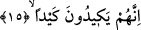
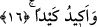
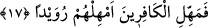

Herhangi bir kimse Kur’an’ı def çalarak veya üflemeli başka bir çalgı aleti eşliğinde
okuyacak olursa kâfir olur.
Mü’minin bunlardan kaçınması, bu tip davranışlara yaklaşmaması gerekir.
15. Onlar bir tuzak kurarlar,
“Onlar” yâni Mekke’liler ve Kureyş’in inatçı kâfirleri onun görevini iptal etme,
yakmış olduğu ışığı söndürme uğrunda kendi güç ve kudretleri oranında “bir tuzak
kurarlar.”
16. Ben de bir tuzak kurarım.
Yani onların kurdukları tuzaklara mukabil, karşı gelinmesi asla mümkün olmayan
sağlam bir tuzakla karşılık veririm. Çünkü ben onları derece derece azaba atarım.
Sonradan yaratılmış, âciz ve zayıf olan bir kimsenin hilesi ezeli ve herşeye kadir olan
güçlü yaratıcının hilesinin karşısında duramaz. Âyette Allah Teâlâ’nın derece derece
azaba atması ve dünyada onlardan kılıçla intikam alması, âhirette de ateşle bunu
yapması “keyd/hile” kelimesiyle ifâde olunuyor. İşte bu ifâde söz sanatları bakımından
“müşâkele” kabilindendir. Çünkü Allah’ın onlara bu şekilde muamele etmesi onların
yaptıkları fiillerin karşılığı olarak vuku bulmasından ve cezâsı olarak meydana
gelmesinden dolayıdır. Aksi takdirde “keyd” bilindiği üzere hile, hileye başvurma
demektir. Hile yapma ve hileye başvurma fiilinin Allah Teâlâ’ya isnâd edilmesi câiz
olmaz. Bir başka ifâdeyle bu kelimelerin sözlükte yazan gerçek anlamları kasdedilmiş
değildir. Herhangi bir şeye müşâkele kabilinden o şeyin ismiyle isim vermek söz sanatı
bakımından yaygındır.
17. Kâfirlere mühlet ver, onları biraz kendi hallerine bırak (pek yakında
desteğimiz sana gelecek).
Yani onlardan intikam almakla meşgul olma, onların helâk olması için bedduâ etme,
şimdilik acele etme! Onlara mühlet ver ve onların helâk talebi karşısında acele etme!